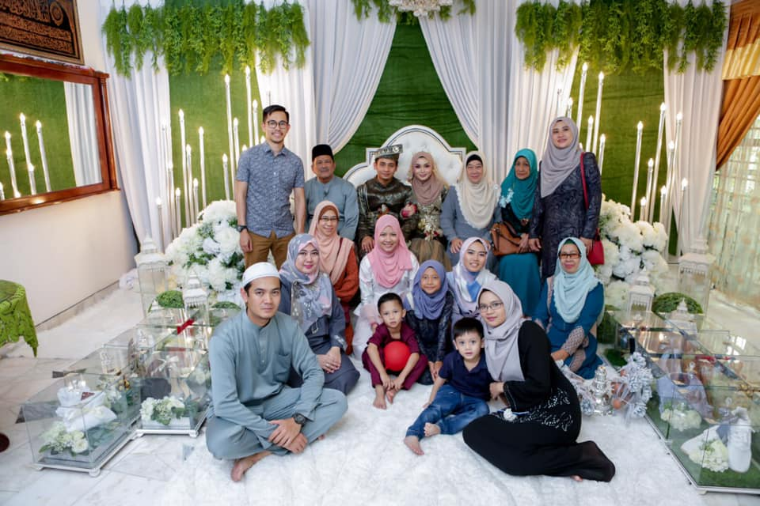

FAMILY

Photo of my sister's wedding , me and my family and also my relatives.
History of My FAMILY
QUOTES
“My family is my life, and everything else comes second as far as what's important to me.”
The family is a valuable god gift which plays a most crucial role in every individual’s life. I love my family very much because all of my family members stand in my good as well as bad times. Let me tell you about my family. I live with my mum, my dad and my brother,sisters. We live in Kuala Terengganu. My mum’s name is Rohana. My dad’s name is Mohd Kamal.I am the youngest of five siblings.From moral teachings to love and support, my family has always helped me without any demand. There is no doubt that we experience our biggest triumphs when we really connect to them.
My Family Values:
-Honesty:This is a principle that is highly protected in my family.
-Kindness to Others:This is not a common trait to all. My mom has this belief that if the world and everybody in it shows love and kindness to one another, there will be no hatred and wars will be eradicated.
-Education:This is a value that has been passed from generation to generation in my family.
-Dress and Appearance:This is a religious value we cherish in my family.